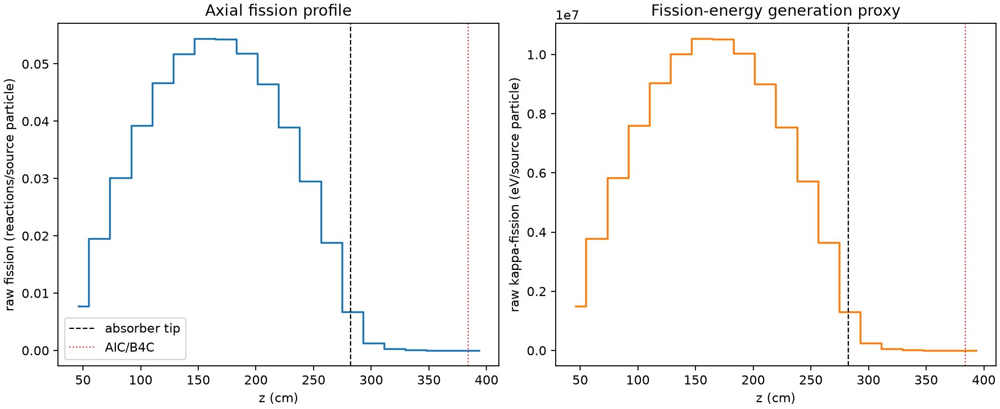
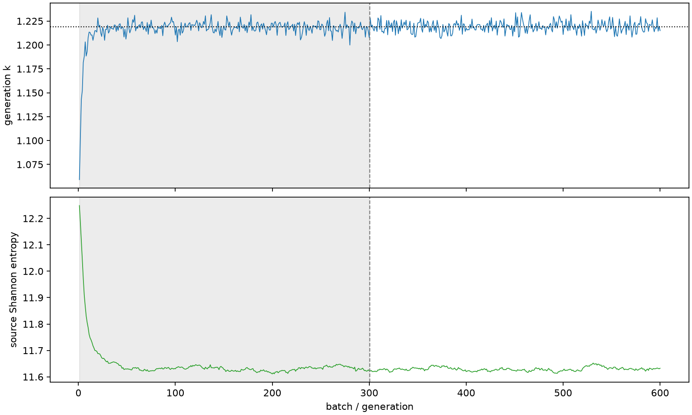

| field | value |
|---|---|
| experiment | V2-STAGE_128_OGRENCI_01-0013 |
| k | 1.2189057675608612 |
| MC standard error | 0.00019455219067090004 |
| seconds | 1055.3597754700022 |
| acceptance | not_assessed |
| convergence | review_required |
Completed is output integrity only; physical and statistical review required. Zero tallies do not prove zero production or zero uncertainty.
| diagnostic | value |
|---|---|
| geometric fuel voxels | 5280 |
| zero fission tally voxels | 76 |
| low signal fuel voxels | 856 |
| low signal fission share | 7.486801918462806e-05 |
| low signal kappa share | 7.489449846552793e-05 |
| important fission share | 0.9500355303150089 |
| previous filter included | 4424 |
| duration estimate s | 1562.5173488400023 |
| actual minus estimate s | -507.15757337000014 |
| fission relative MC error | statistics |
|---|---|
| all_geometric_fuel | {"voxels": 5280, "positive_mean_voxels": 5204, "zero_mean_voxels": 76, "undefined_relative_error_voxels": 76, "median": 0.010737011357851836, "p95": 0.6644797717489371, "maximum": 1.0000000000000002} |
| low_signal | {"voxels": 856, "positive_mean_voxels": 780, "zero_mean_voxels": 76, "undefined_relative_error_voxels": 76, "median": 0.5163523194452957, "p95": 1.0, "maximum": 1.0000000000000002} |
| important_95pct | {"voxels": 3041, "positive_mean_voxels": 3041, "zero_mean_voxels": 0, "undefined_relative_error_voxels": 0, "median": 0.008139362051326648, "p95": 0.01214127919400085, "maximum": 0.01457579073207494} |
| outside_previous_filter | {"voxels": 856, "positive_mean_voxels": 780, "zero_mean_voxels": 76, "undefined_relative_error_voxels": 76, "median": 0.5163523194452957, "p95": 1.0, "maximum": 1.0000000000000002} |
| kappa_fission relative MC error | statistics |
|---|---|
| all_geometric_fuel | {"voxels": 5280, "positive_mean_voxels": 5204, "zero_mean_voxels": 76, "undefined_relative_error_voxels": 76, "median": 0.01072645112460121, "p95": 0.6640433184270272, "maximum": 1.0000000000000002} |
| low_signal | {"voxels": 856, "positive_mean_voxels": 780, "zero_mean_voxels": 76, "undefined_relative_error_voxels": 76, "median": 0.5159281579623692, "p95": 1.0, "maximum": 1.0000000000000002} |
| important_95pct | {"voxels": 3041, "positive_mean_voxels": 3041, "zero_mean_voxels": 0, "undefined_relative_error_voxels": 0, "median": 0.008131164504406277, "p95": 0.012128676263623572, "maximum": 0.014559979658612459} |
| outside_previous_filter | {"voxels": 856, "positive_mean_voxels": 780, "zero_mean_voxels": 76, "undefined_relative_error_voxels": 76, "median": 0.5159281579623692, "p95": 1.0, "maximum": 1.0000000000000002} |
| axial bin | fission share | kappa-fission share |
|---|---|---|
| 1 | 0.015566270650117646 | 0.015567019079047529 |
| 2 | 0.039165362506675995 | 0.03916527497583074 |
| 3 | 0.06057256866390964 | 0.06057204043037014 |
| 4 | 0.07888748933115508 | 0.07888690546493911 |
| 5 | 0.09369703116234188 | 0.09369655112662142 |
| 6 | 0.10387104470367449 | 0.10387065986343007 |
| 7 | 0.10920993176890985 | 0.10920954614250204 |
| 8 | 0.10913088179882492 | 0.10913078086968091 |
| 9 | 0.10402693321744617 | 0.10402665417616515 |
| 10 | 0.09344297890451676 | 0.09344258630491444 |
| 11 | 0.0783197458326655 | 0.07831949217588806 |
| 12 | 0.059415222415677385 | 0.05941515486743868 |
| 13 | 0.03790996588139119 | 0.0379097986461859 |
| 14 | 0.013435608885949928 | 0.013437329333300153 |
| 15 | 0.0025579233411057185 | 0.00255887264299854 |
| 16 | 0.000610959274192284 | 0.0006111852523014083 |
| 17 | 0.00013838783599764984 | 0.0001384396175718192 |
| 18 | 3.369840523876139e-05 | 3.37104515171143e-05 |
| 19 | 7.294195216609515e-06 | 7.297117717702994e-06 |
| 20 | 7.012249926635588e-07 | 7.014615791815343e-07 |
Histories include the inactive-to-active transition at batch 300. kappa-fission approximates fission energy production, not total heat deposition.

